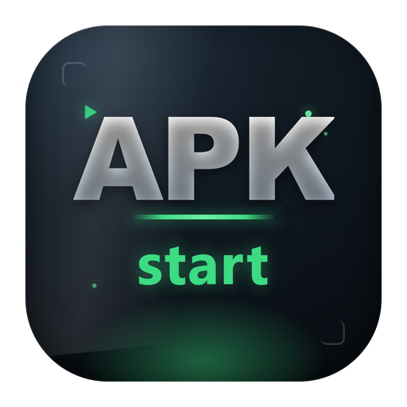

После установки автоматически создаётся значок на рабочем столе: двойной щелчок запускает приложение в отдельном окне, как обычную программу Windows. Если связь с .apk зарегистрирована, двойной щелчок по APK в проводнике тоже сразу установит его в ApkStart.
Привет
ApkStart готов
Отпустите, чтобы начать установкуПоддерживается один или несколько файлов .apk
Настройки
Среда выполнения и окружение
Проверка…
Полный автомат: не нужно выбирать образ, включать ускорение и настраивать память
Установить Android на виртуальный диск
Окно виртуальной машины открыто. Выполните один раз 6 шагов ниже — после этого ApkStart будет запускаться прямо с диска, и образ больше не понадобится.
Меню запуска: используйте ↓ выберите Installation - Install Android-x86 to harddisk, Enter
Choose Partition: выберите Create/Modify partitions; на вопрос об использовании GPT выберите No
Разметка через cfdisk: New → Primary → объём — сразу Enter → Bootable → Write → введите yes → Quit
Форматировать: выберите vda1 → когда появится предложение отформатировать, выберите ext4 → Yes
Загрузка и система: Install GRUB выберите Yes; Install /system as read-write выберите Yes
Готово: когда прогресс дойдёт до 100%, нажмите ниже «Я установил» (ApkStart перезапустится и перехватит управление)
Если позже появится сообщение, что adb не подключён: в окне виртуальной машины нажмите Ctrl+Alt+F1 откройте терминал и выполните
setprop service.adb.tcp.port 5555, stop adbd, start adbd, затем нажмите Ctrl+Alt+F7 и вернитесь в графический интерфейс.
Автоматический режим (по умолчанию, настройка не нужна)
Проверка…
Память, число ядер, бэкенд рендеринга, порт и способ ускорения выбираются автоматически; при неудачном запуске происходит автоматический откат и повтор — вручную ничего менять не нужно. ApkStart использует выделенный порт службы adb 5044 (ваш собственный adb в системе использует 5037), поэтому в командной строке
adb devices устройство Android не видно — это намеренная изоляция. Чтобы подключиться, используйте
$env:ANDROID_ADB_SERVER_PORT=5044 и выполните adb. Внимание: не подключайтесь вручную к порту 5555 adb connect, иначе поверх запущенного приложения появится системное окно «Разрешить отладку по USB?».
Подсчёт…
Образ системы один на всю машину, данные приложений хранятся в разностном слое; старые образы, старые снимки, журналы и файлы блокировки можно освободить. Журнал при превышении лимита прокручивается и не растёт бесконечно. «Сброс данных Android» действительно удаляет несколько ГБ пользовательских данных, оставляя только саму систему.
Отчёт диагностики нужен для разбора проблем; пересоздание восстановит значки на рабочем столе и в меню «Пуск»
Работает в трее при входе в Windows: двойной щелчок по значку на рабочем столе открывает приложение за секунды, запускать вручную не нужно.
Окно приложения
нажмите в любой момент F11 или переключите правой кнопкой в трее; полный экран только увеличивает окно, пропорции кадра не меняются, приложение не перезапускается.
Если включено, каждое приложение сразу открывается на весь экран, F11 больше не нужен. Лучше всего работает вместе с «Альбомной» ниже — пропорции альбомной панели и так совпадают с экраном, и полный экран не оставляет чёрных полей.
Ориентация AndroidРеальная ориентация панели виртуального телефона определяется. Если ориентация панели не совпадает с заявленной приложением, Android отдаёт приложению узкую полосу посередине, а по бокам добавляет чёрное — ни размер окна, ни разрешение этого не заполнят. «Следовать приложению» считывает ориентацию из APK при установке и при запуске переключает панель на нужную, поэтому Hongguo, Modu и подобные приложения открываются ровно и во весь экран. Среда выполнения перезапускается только при смене ориентации (около десятка секунд), дальше приложения той же ориентации открываются за секунды.
в AndroidПереключатель автоповорота включён по умолчанию. Обратите внимание: на ориентацию изображения это не влияет — ориентация панели и экрана по-прежнему задаётся политикой выше и игнорированием запросов приложения, датчик их не сдвинет. Значение нужно только тем приложениям, которые его читают.
Ширина 720 при 190 dpi равна 606dp — это ровно за порогом планшетной вёрстки Android в 600dp: двухколоночная страница серий и разделённые настройки в Hongguo появляются только при такой вёрстке. Если отключить, вернётся телефонная вёрстка (крупнее шрифт, меньше информации). Изменение применяется при следующем открытии приложения.
Это среда выполнения Сейчас используемая физическая ориентация панели, её автоматически задаёт политика выше. Полностью в ваших руках она только в режиме «Принудительно».
В собственном окне эмулятор сам рендерит и размещает кадр: перетаскивание, масштабирование и поворот отзываются сразу, без чёрных полей и смещения нажатий — ценой лишнего значка на панели задач (в альбомной ориентации используйте меню в трее или Ctrl+Alt+R). Встроенный режим помещает окно эмулятора внутрь нашего окна: выглядит целостнее и есть своя кнопка поворота, но при масштабировании, повороте и переключении приложений возможны просадки кадров и чёрные поля. Изменение применяется при следующем открытии приложения.
В оконном режиме окно масштабируется перетаскиванием рамки; здесь задаётся внутренний размер рендеринга Android — чем меньше, тем экономнее.
Кнопки мыши
Эмулятор изначально считает левую кнопку касанием пальцем, а перетаскивание с зажатой кнопкой — свайпом; дополнительная настройка не нужна.
По умолчанию эмулятор считает и правую кнопку нажатием (легко промахнуться). Если включить, правая кнопка только выполняет «Назад» и больше не нажимает.
Плавный режим объединяет прокрутку за короткий промежуток в один жест свайпа: без рывков по клеткам и без запуска отдельного процесса adb на каждую клетку.
Для боковых кнопок нужен глобальный хук мыши. Хук ставится, только когда окно приложения ApkStart активно, и снимается при потере фокуса или закрытии, рабочий стол не тормозит.
Эта раскладка действует, только когда окно приложения активно; после переключения на рабочий стол или закрытия окна поведение мыши полностью возвращается к стандартному в Windows.
Раскладка клавиатуры (геймпад)
Превращает клавиши клавиатуры в нажатия и свайпы по экрану Android. Подходит для мобильных игр с клавиатуры (WASD — движение, J/K — умения и т.п.). Настраивается отдельно для каждого приложения: правая кнопка на карточке приложения → «Раскладка клавиатуры», выберите шаблон или настройте своё.
Для текущего приложения раскладка не настроена. Щёлкните карточку приложения правой кнопкой, чтобы применить готовый шаблон.
Производительность и ресурсы
Определяет, сколько CPU забирает виртуальная машина и насколько детальной будет картинка. Если Hongguo/Douyin подтормаживают, переключите на «Плавно»; если нужно просто держать лёгкие приложения — на «Экономно». Изменение применится при следующем открытии приложения.
Объём увеличивается на месте: установленные приложения и сохранения остаются, только следующее открытие приложения займёт на десяток секунд больше.
Чтение раздела данных…
Язык системных настроек, диалогов разрешений и формата даты. Подставляется в виртуальную машину при загрузке,
Применится после перезапуска среды выполнения. Китайская раскладка на этот параметр не влияет — она включается отдельно ниже.
В образе есть только английская клавиатура; если включить, тихо установится и включится идущая в комплекте раскладка Google Pinyin — так в приложениях Android можно сразу печатать по-китайски. Если отключить, останется системная раскладка.
Задаёт для Android китайские публичные DNS (Alibaba / Tencent). По умолчанию Android использует DNS хоста: если на хосте включён VPN или корпоративная сеть, разрешение имён растягивается на сотни миллисекунд и видео-приложения медленнее показывают первый экран. Если внутренние домены перестают открываться, это можно отключить.
Обеспечивает нормальное воспроизведение звуков уведомлений и видео. Отключайте только если звук совсем не нужен и хочется сэкономить немного CPU.
Второе открытие приложения занимает считанные секунды, ценой становятся лишние 2–3 ГБ на диске — ram.bin. При нехватке места можно отключить: влияет только на скорость запуска, на приложения и сохранения — нет.
Детали контейнера (дополнительно)
Ограничивает квоту vCPU и снижает приоритет процесса, отдавая CPU рабочему столу Windows. Пункт «Политика ресурсов» выше задаёт это автоматически.
Игровой режим держит высокий приоритет CPU для виртуальной машины Android и сокращает опрос на стороне хоста — задержка ввода и изображения минимальна; ценой становится замедление остальных программ. Когда окон приложений нет, контейнер всё равно паркуется со сниженным приоритетом.
Дополнительно отключает фоновые пакеты Play Маркета, мастер настройки, службу печати и т.п., оставляя только необходимое для запуска приложений. Если приложение сообщит об отсутствии сервисов Google Play, отключите этот переключатель — всё восстановится.
Сразу после запуска ApkStart в фоне поднимает окружение Android (окно всё время скрыто, эмулятор не виден). Дальше для любого приложения остаётся одно «открыть»: на практике вместо 20 с лишним секунд — почти без ожидания. Цена — около 1 ГБ памяти в простое; если отключить, первое открытие приложения потребует холодного запуска.
Окружение Android загружается один раз и остаётся в памяти; дальше при открытии приложения система заново не поднимается — запускается только это приложение, а процессы остальных останавливаются. После закрытия последнего окна фон очищается и контейнер паркуется, а следующее открытие всё равно происходит за секунды.
Источники загрузки и обновлений
«Авто» одновременно запросит последние версии на GitHub и Gitee, скачает по 256 КБ с каждого адреса для замера скорости и продолжит с самого быстрого; недоступность одного источника не мешает обновлению.
Если прямое подключение к GitHub слишком медленное, дополнительно замеряется скорость двух публичных прокси-сервисов ghfast.top / gh-proxy.com (передают только публичные файлы релизов, аккаунт не затрагивается). Если отключить, используются только прямое подключение и ваш собственный префикс.
Если заполнить, используется только ваш префикс, а два публичных зеркала выше не пробуются; если оставить пустым, решает логика «Авто». Загрузчик подставляет префикс перед настоящим адресом.
Большие файлы качаются блоками параллельно. 8 потоков по умолчанию уже насыщают большинство домашних подключений; при стабильной сети можно попробовать 16.
Источник обновлений Gitee (необязательно)
Репозиторий проекта открыт, список релизов Gitee читается анонимно, так что источник Gitee работает и с пустым полем. Заполнять нужно только при ограничении запросов Gitee (ответ 403/429) или если нужен доступ к приватной ветке: gitee.com → Настройки → Личный токен, достаточно галочки «projects»; он используется только для чтения списка релизов и ничего не загружает.
Проверка ПК · автоконфигурация
Сначала проверяет компьютер: включена ли виртуализация CPU, есть ли в Windows платформа гипервизора, какая видеокарта и сколько у неё памяти, хватает ли ОЗУ и версии системы. Что можно поправить автоматически (память / ядра / качество графики / бэкенд рендеринга), сразу записывается в настройки и закрепляется как драйвер; для того, что требует прав администратора, выдаётся кнопка; а то, что меняется только в BIOS, описывается словами.
Драйверы · патчи совместимости
Некоторым машинам нужны другие параметры запуска, чтобы вообще заработать (старая видеокарта с низкой версией GLES, выключенное аппаратное ускорение, драйвер, который падает при включении аппаратного рендеринга). Драйвер — это JSON: какие машины совпадают + какие параметры запуска менять при совпадении. Можно писать свои, импортировать и делиться. Драйвер меняет только пункты из белого списка,Не выполняет никакого кода; если совпадений нет, правило не применяется.
Чтение драйверов…
«Экспорт шаблона для этого ПК» подставит условия совпадения под эту машину, измените effect из
gpuMode / forceTcg и всё заработает. Описание полей — в файле репозитория docs/drivers.md.
Автодиагностика · умная проверка
Регулярно проверяет компьютер в фоне: запустилась ли среда выполнения Android, в порядке ли авторизация adb, сколько осталось места на диске, не мешает ли разделу данных разностный диск, целы ли снимки, не конфликтуют ли настройки. Уведомляет только при обнаружении Новое серьёзной проблемы один раз показывается уведомление, остальное тихо перечисляется ниже.
Если отключить, регулярная проверка прекратится; запустить вручную можно кнопкой «Проверить сейчас».
Уведомления только о серьёзных проблемах; известные старые проблемы повторно не беспокоят.
Ещё не проверялось
Дополнительные параметры (обычно менять не нужно)
Среда выполнения
ApkStart использует только собственную среду выполнения: adb, emulator и образ системы он скачивает и ведёт сам, не ищет, не перехватывает и не зависит от эмуляторов, установленных на компьютере (MuMu / LDPlayer / BlueStacks / WSA не используются). Поэтому смена машины, наличие чужих эмуляторов и их обновления здесь ни на что не влияют.
Назначается самим ApkStart (emulator-5554, при конфликте порт автоматически сдвигается), заполнять не нужно.
Сейчас есть только один универсальный образ Android 14: на нём работают и x86-, и ARM-приложения, при первом запуске ARM-приложения образ скачивается автоматически, переключать вручную не нужно. Этот переключатель оставлен только для совместимости со старыми настройками.
Не скачано
Настройки системы Android (без входа в рабочий стол Android)
Среда выполнения не запущена
Отключает системные анимации, снимает ограничение фоновых процессов и добавляет приложение в белый список батареи — на слабых компьютерах эффект заметнее всего.
Беспроводная сеть внутри виртуальной машины Android; если отключить, немного экономится CPU.
Полностью отключает сеть (включая мобильные данные); включайте, когда нужна тишина.
Если отключить, переключение разделов заметно ускорится; на функции это не влияет.
—
Рабочий стол и приложения
Ярлык с настоящим значком приложения, двойной щелчок сразу открывает приложение
Имя приложения находится поиском Windows, а панель задач группирует по приложению
Если значки на рабочем столе случайно удалены или заблокированы антивирусом, нажмите здесь, чтобы восстановить все по текущим настройкам.
Обмен файлами
После изменения существующие файлы из старой папки автоматически перенесутся в новую; работающий обмен файлами не прерывается.
Обе папки постоянно синхронизируются в двух направлениях: файлы, сохранённые приложением в эту папку, появятся в общей папке на этом ПК.
Интеграция с системой
Двойной щелчок по APK устанавливает его в ApkStart (только для текущего пользователя, без прав администратора)
Здесь занимается больше всего места (несколько ГБ). Перенос на другой диск заметно разгрузит диск C; после изменения нужно перезапустить программу, существующие данные автоматически не переносятся (скопируйте вручную и удалите старую папку).
Больше всего места занимает именно это: раздел данных (по умолчанию 6 ГБ, объём увеличивается выше) и снимок быстрого запуска (около 2–3 ГБ). При нехватке места укажите другой диск (например D:) — применится после перезапуска программы; файлы в старой папке apkstart.avd Можно перенести целиком и затем удалить.
Удаление снимает связь с .apk и убирает программу; в портативной версии папку нужно удалить вручную, как указано в подсказке.
Обновление программы
Ещё не проверялось
Последняя версия берётся с GitHub (RoutineMiku/apkstart); облегчённая версия скачает портативный пакет и сама заменит файлы программы — среда выполнения, установленные приложения и снимки не затрагиваются.
О программе

Отсканируйте код, чтобы подписаться на аккаунт
Douyin · 日常MIKU
ApkStart
Лаунчер Android-приложений для Windows с установкой по двойному щелчку: установка APK, ярлыки на рабочем столе, запуск в отдельном окне, двусторонний обмен файлами.